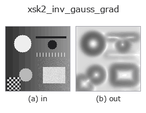

edges op• Data kinds: image → image
• Call: fullseye.apply(img, "xsk2_inv_gauss_grad", a=0.5, b=0.5) (2-D model = एक image + दो scalar knobs a,b∈[0,1])

*Figure synthetic 128×128 input पर सच में चलाकर मिला output है। बाईं ओर input, दाईं ओर output। Point clouds ऊपर से देखे गए scatter के रूप में (brightness = z), 1-D series line के रूप में, volumes z दिशा में maximum-intensity projection के रूप में, videos बीच के frame के रूप में, complex images amplitude के रूप में, और जो return values चित्र नहीं बन सकते वे स्वयं values के रूप में दिखाए जाते हैं।*
Knob a को बदलकर (0.1 / 0.5 / 0.9, दूसरा knob default पर):
▸ xsk2_inv_gauss_grad: knob a को बदलने का figure (docs site)
*Knob b output नहीं बदलता (मापा गया: 0.1 / 0.5 / 0.9 पर एक जैसा)।*
दूसरी images पर भी (synthetic scene / photo / coins। ऊपर की row में inputs, नीचे की row में उनके outputs। Knobs default पर):
▸ xsk2_inv_gauss_grad: दूसरी images पर output (docs site)
*Colour (H,W,3) input नहीं दिखाया गया: यह op colour channel को तीसरे spatial axis की तरह लेता है (channels को पार करता है)। इसे हर channel के लिए अलग से call करें।*
Inverse Gaussian gradient image (Active Contour / GAC का edge stopping function)। skimage.segmentation.inverse_gaussian_gradient को call करता है।
a edge संवेदनशीलता alpha को sweep करता है (50 + 150*a, सीमा 50–200; जितना बड़ा, उतने ही कमज़ोर edges भी stopping-function का मान घटाते हैं = उतनी आसानी से रुकता है)। b उपयोग नहीं होता। मान edges पर छोटा (0 के क़रीब) और समतल क्षेत्रों में 1 के क़रीब होता है —— यह आउटपुट geodesic active contour शैली की segmentation में edge-stopping पद के रूप में अभिप्रेत है; सीधे edge image के रूप में देखने पर इसकी brightness सामान्य edge detection की तुलना में उल्टी दिखती है।
Border handling: किनारे के pixel की नकल की जाती है (nearest neighbour) (मापा गया; tools/impl2/border_probe.py)।
खाली frame (मापा गया): एक समान brightness वाली image देने पर brightness चाहे जो हो, सभी pixels foreground (1) बन जाते हैं। जिस frame में रोशनी उड़ गई हो, कुछ रास्ते में आ गया हो, या कोई subject न हो, वह "100% defective" के रूप में लौटता है, इसलिए upstream में ही जाँचें कि frame एक समान है या नहीं और ऐसे frames को हटा दें।
• gallery2d_edges family guide
• Sample data catalog (DL URL / license) — 2-D के लिए skimage.data (BSD/public) + synthetic, 3-D के लिए real data sources (Stanford/PDS आदि) के DL URL।
• Operators का स्रोत और संदर्भ — इस op family के मूल research/methods के स्रोत।
• Algorithm का मानक स्रोत (लेखक, वर्ष) और उपयोग ऊपर की family usage guide में दिए गए हैं।
नीचे का program सच में चलता है, यह जाँचा गया है (figure वाला ही input)। Studio की help में यह block buttons बन जाता है, जिनसे इसे वहीं load करके चलाया जा सकता है।
xsk2_inv_gauss_grad 0.40 0.50
▸ यह pipeline load करें · Load करके चलाएँ
• gallery2d_edges — py -3.11 examples/gallery2d_edges.py
image को input के रूप में लेते हैं)identity · gaussian · mean_box · bilateral · unsharp · median · min_filter · max_filter
edges)sobel_mag · prewitt_mag · roberts_mag · dog · edge_transition_width · grad_dir · log · corner_response
*Provenance: ops.py — 2D operator registry. यह per-op note tools/opdocs.py md से अपने-आप generate होता है (हाथ से edit न करें)।*
© 2026 Kazufumi Furuse — Fullseye operator documentation. Licensed under Apache-2.0.